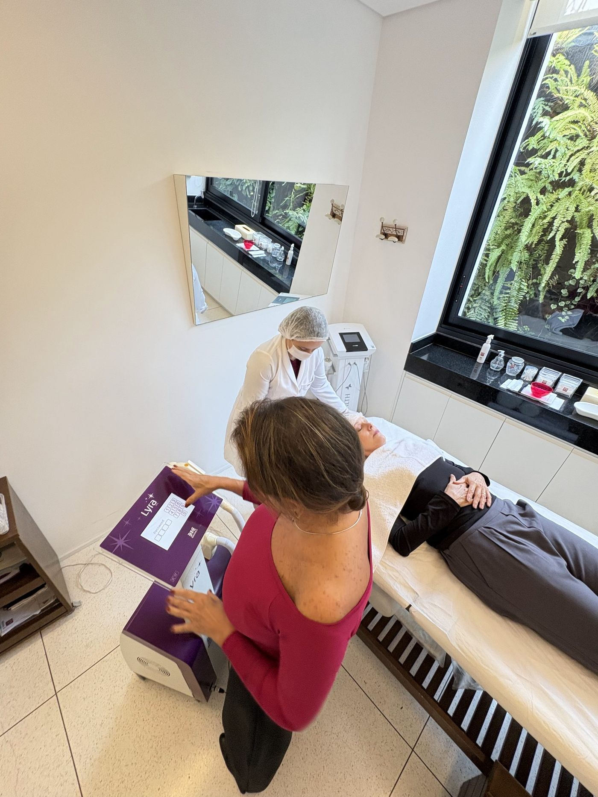
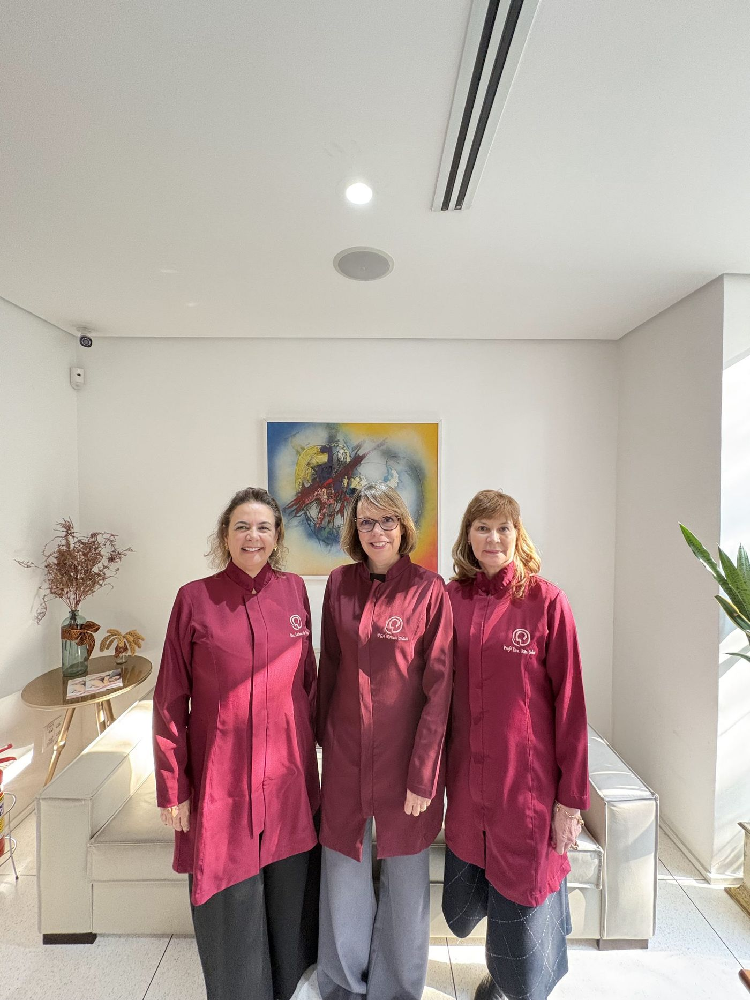
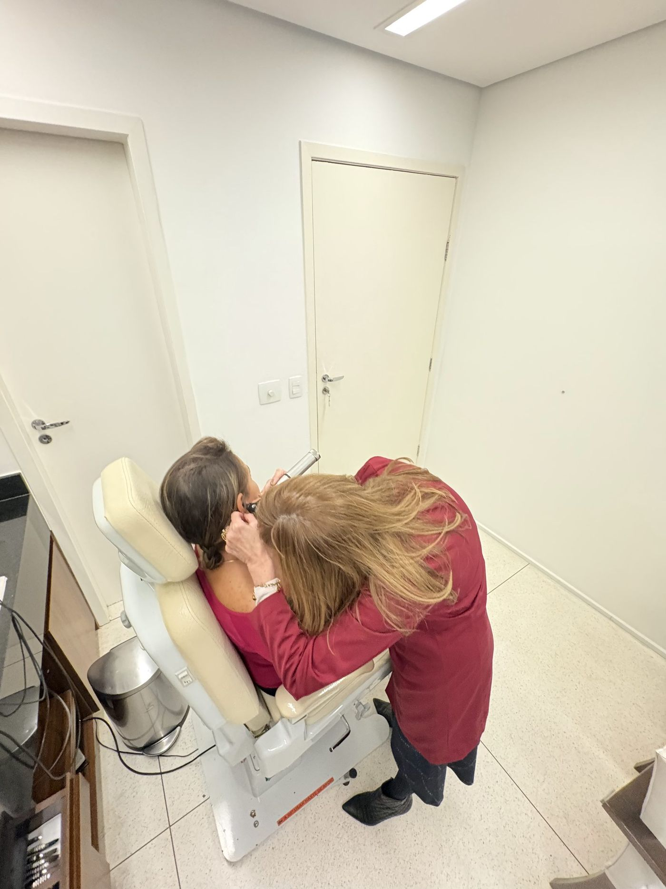

Artigos sobre ouvido, nariz e garganta, fonoaudiologia, prevenção e cuidados com a pele — escritos para quem quer entender, não decorar termos médicos.

Com o ar seco do outono vêm rinite, sinusite e crises respiratórias. Veja as recomendações da equipe — incluindo o passo a passo seguro da lavagem nasal.
Ler artigo →
Trocar o cigarro comum pelo eletrônico não liberta do vício — e o "vaping" provoca lesões pulmonares e dependência ainda mais rápida. Entenda os riscos.
Ler artigo →
O câncer de pele é o mais recorrente no Brasil. Aprenda a regra do ABCDE para reconhecer sinais suspeitos e os cuidados diários que protegem a sua pele.
Ler artigo →
A audição é normal, mas entender a fala em ambientes barulhentos é difícil. Conheça os sinais do TPAC, o diagnóstico e os tratamentos disponíveis.
Ler artigo →
Zumbido, ronco, refluxo, alergias, alterações na voz: a visita anual ao otorrino detecta cedo o que pode virar problema sério. Saiba o que é avaliado.
Ler artigo →